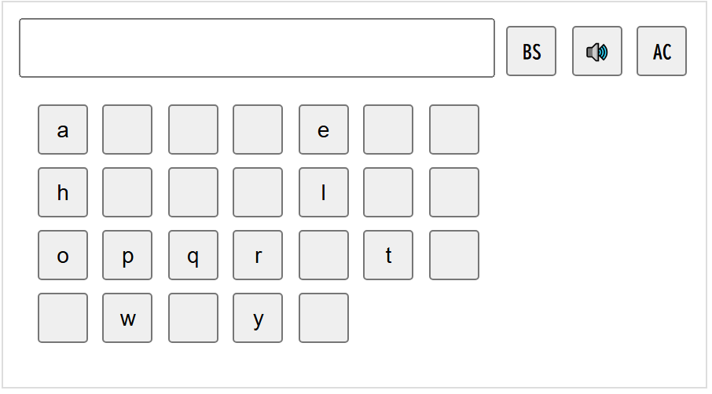
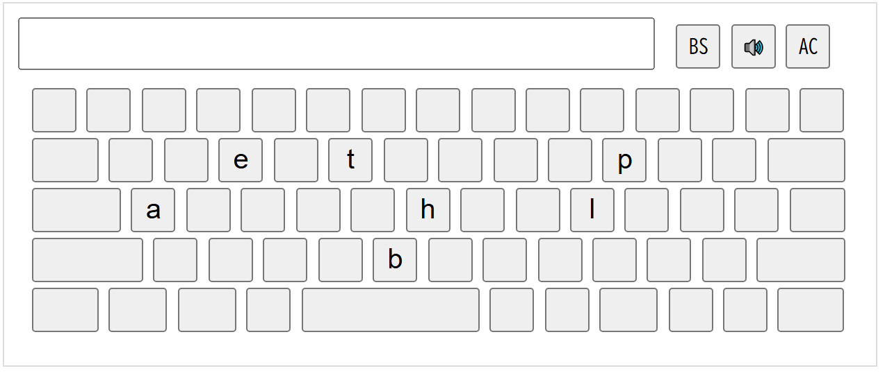

アルファベットの学習とQWERTY配列の学習
制作意図：アルファベットとキー配列の同時習得
外国語（英語）の時間やICT学習で習う「アルファベット」の進度に合わせて、キーボードのQWERTY配列を少しずつ学べるように開発しました。
ローマ字入力の前に、まずはアルファベットそのものの形とキーの配置を紐づけて覚えることができます。
ホームポジションを中心に「今日習った文字」だけを表示・有効化できるため、視覚的な迷いを無くし、自然なタイピングの基礎を育みます。
スクリーンキーボード
アルファベット順
QWERTY配列
ボタンをクリックするとアルファベットを入力して音声が出ます。
・BS：１文字消す
・AC：全部消す
・🔊：全体を読み上げ
使い方
abc（習った文字のみ）
QWERTY配列（習った文字のみ）
URLの末尾（クエリ文字列）に、表示したいアルファベットを追加して指定します。
・abc.html?ch=[有効にしたい文字]
・qwerty.html?ch=[有効にしたい文字]
設定したURLをブラウザのブックマークバーにドラッグ＆ドロップしておくと
いつでも同じ設定で練習できます。

